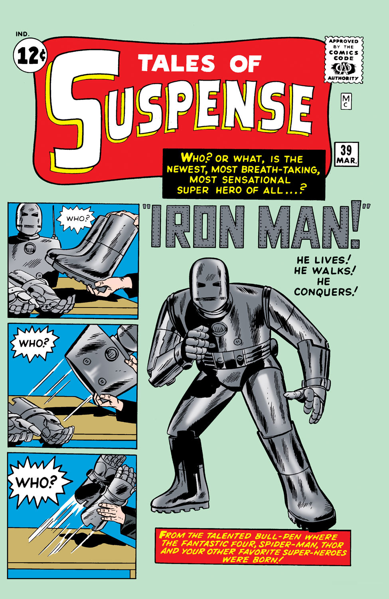

Tony Stark was a genius, billionaire who made his fortune from weapons manufacturing. After being gravely injured
by one of his own weapons, he vowed to change his ways and become someone who protects people instead of hurting them.
He created many different armored suits in his mission to keep the world safe.